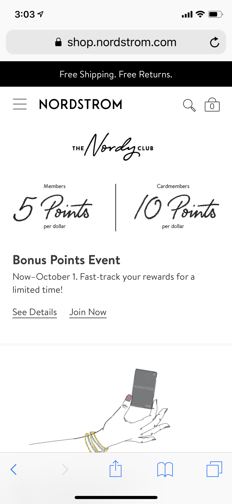
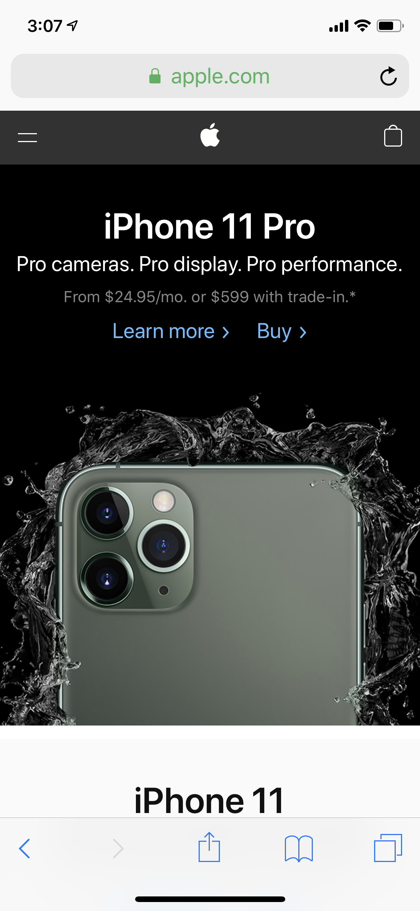

Proximity
Nordstrom uses proximity in it's design by creating a large amount of white and negative space around the website. This creates a simplistic and minimalistic design.
Alignment

Contrast
Apple uses contrast in their website by using white over a black background and vice versa. Apple likes to keep things simple and use two contrasting colors to create a more minimalistic and simple color scheme.